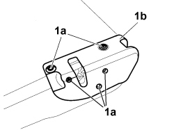
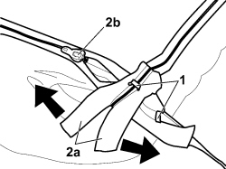
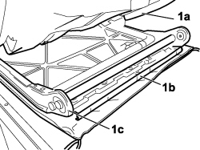
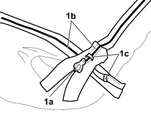

7050D37 RIGHT REAR SEAT BACKREST COVER (SINGLE) - R.R. WITH BACKREST REMOVED
- Path
- Procedures > 70 FITTINGS > 7050 REAR SEATS > 7050D REAR SEAT TRIM/PADDING > 7050D37 RIGHT REAR SEAT BACKREST COVER (SINGLE) - R.R. WITH BACKREST REMOVED
- Kind
- repair procedure (removal / refitting; the operation number is the code)
- Applies to
- all engines; all production periods
- Interactive page
- https://sloeber94.github.io/elrnDB-fCrm/en/#/194001163
Applies to: all engines; all production periods
 Removing
Removing
 Refitting
RefittingOp. 7050A31 MOUNT (ONE) FITTING REAR SEAT TO FLOOR - R R
Op. 7050B10 ERAR SEAT HEAD RESTRAINT (ONE), LEFT OR RIGHT - R.R.
Op. 7050B08 GUIDE BUSH FOR HEAD RESTRAINT (ONE) FOR REAR SEAT - R.R
1. Undo the fixing bolts (1a) and remove the side panel (1b).

Applies to: all engines; all production periods
1. Prise up and remove the zip fastening retaining clamps.
2. Open the zip by applying pressure on edges (2a) in the direction shown in the figure or by means of the cursor (2b).

Applies to: all engines; all production periods
1. Raise the padding of backrest (1a) and at the rear, prise up the profile (1b) retaining the backrest frame trim (1c).
- Cut the retaining rings between the cover and the padding using clippers and remove the trim.

Applies to: all engines; all production periods
Refitting
Removing- Arrange the backrest trim and use an appropriate tool to crimp the retaining rings between trim and padding.
Tool | Description | Function | Validity |
|---|---|---|---|
1878017001 | Pliers for metal points | Fitting new backrest cover retaining rings |
- Fit the trim retaining profile to the backrest frame.
1. Re-check the arrangement of the trim and use the cursor provided (1a) to close the zips. To prevent the zips from opening, use new retaining clamps (1c) to be fitted on the ends of the zips.

Applies to: all engines; all production periods
- After closure, remove the cursor of the closed zip and carry out the same operation to close all the zips.
Op. 7050B08 GUIDE BUSH FOR HEAD RESTRAINT (ONE) FOR REAR SEAT - R.R
Op. 7050B10 ERAR SEAT HEAD RESTRAINT (ONE), LEFT OR RIGHT - R.R.
Topics linked from this page (3)
- 7050A31 BRACKET TO FASTEN REAR SEAT BACK, (ONE) LH OR RH - R R WITH SEAT BACK TAKEN OFF
- 7050B08 GUIDE BUSH FOR HEAD RESTRAINT (ONE) FOR REAR SEAT - R.R
- 7050B10 ERAR SEAT HEAD RESTRAINT (ONE), LEFT OR RIGHT - R.R.